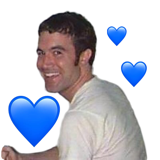
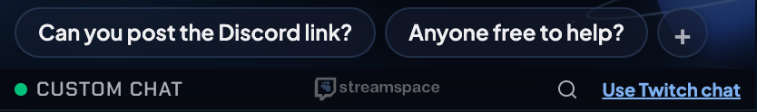

Round one: the Top 8
Welcome, tester.
You're one of the first eight to try StreamSpace. Thank you for doing this out of the love of your heart.

Here's everything you need, start to finish.How testing works
A test round is a few weeks of using StreamSpace on real streams, telling me what happens, then a short survey. Then I fix things, and we go again.
- Ask to joinOn streamspace.tv, pick which one you are, add your Twitch name and message me on Discord.
- Get pickedTesters are hand-picked so each round has a good mix of streamers, mods and viewers.
- Join the testers' channelYou get the StreamSpace Tester role in Discord, which opens a private channel just for testers.
- Install and sign inI DM you the install link. Streamers, the OBS dock link is right on this page. The steps are below.
- Use it, and try this round's listStream, mod or hang out like you normally would, and tick off the things on the list.
- Tell me what happensBugs, confusion, things you love, things that annoy you. All of it helps.
- Wrap-up surveyAbout five minutes at the end of the round. Then you can stay on for round two if you'd like.
Getting set up
Takes about five minutes. StreamSpace asks you to agree to the tester agreement when you sign in with Twitch; you can read it any time. Everyone starts with the browser extension. Streamers add one more thing in OBS.
Extension + OBS dock
- Install StreamSpace from the link I DM'd you (Chrome or Brave).
- Sign in with Twitch when it asks, then agree to the tester agreement when it pops up.
- Add the StreamSpace dock in OBS. Step by step below.
Extension + panel
- Install StreamSpace from the link I DM'd you (Chrome or Brave).
- Sign in with Twitch when it asks, then agree to the tester agreement when it pops up.
- We recommend pinning StreamSpace to your toolbar, so you can see when someone you mod for goes live: click the puzzle-piece Extensions button at the top right of Chrome or Brave, then the pin next to StreamSpace.
- Click the StreamSpace button in your toolbar to open your panel next to Twitch.
Just the extension
- Install StreamSpace from the link I DM'd you (Chrome or Brave).
- Open or refresh any twitch.tv tab. That's it.
Then post in the testers' channel that you're in, so I can connect you with the right people. Stream and mod? Do the streamer setup; your panel works too.
For streamers
Your OBS dock
The dock is where your mods' questions, Twitch's events and (if you like) your chat show up, right inside OBS, so you never have to leave your stream to check on things.
Add it to OBS
- Open Custom Browser DocksIn OBS's menu bar: Docks → Custom Browser Docks…
- Add the dockIn the empty row, type StreamSpace as the name, paste this as the URL, then click Apply:
Your Twitch chat comes inside the dock, so you can close OBS's own chat dock.
https://handsome-tom.github.io/streamer-buddy-system/?livechat - Put it where you'll see itDrag the new panel next to your chat, or anywhere that's easy to glance at while you're live.
- Sign in with TwitchClick Sign in with Twitch in the dock and allow it. The tester agreement pops up once: read it, tick the box and press I agree.
- Add your modsYour mods need to be in the testing program too, with StreamSpace installed. Then open Connections in the dock and add their Twitch names. They show up once they've added you back.
- Allow mod tools when askedThe first time a mod uses a tool like a poll or slow mode, the dock asks you to allow it. One tap.
If anything goes wrong mid-stream
Tap Use Twitch chat, at the top right of the chat in your dock. It switches straight back to Twitch's own, normal chat, so your stream carries on as usual. You can switch back to custom chat whenever you like.

Get the extension too
The dock is your side. Install the StreamSpace extension in Chrome or Brave too, so you get the other side of the coin and see it the way your mods and viewers do.
Same install link I DM'd you, same as everyone else.
How to test
Use StreamSpace the way you normally would, and try these along the way. Your ticks are saved in this browser, just for you.
Then tell me: what did you actually use, and what did you ignore?
Then tell me: what saved you time, and what got in the way?
Then tell me: which of these would you miss if they went away?
Stream and mod? Do both lists, and tell me how switching between the two felt.
Telling me things
"I didn't get what this button does" is just as useful as a crash. Three ways, pick whichever's easiest:
- Something broke: copy the template below, fill it in and post it in the testers' channel.
- Quick thoughts: just post them in the testers' channel.
- From inside StreamSpace: Settings → Send feedback comes straight to me.
What happened: What I expected: What I clicked right before: Where: (OBS dock / Chrome panel / on twitch.tv / the website) Whose channel: Browser: (Chrome / Brave) Computer: (Mac / Windows) Did it happen again when I tried?: (yes / no / didn't try)
A screenshot or a short clip helps a lot. Don't stress about every line; half a report beats no report.
What I'm asking
- Use it on real streams, the way you normally would.
- Try the things under How to test.
- Tell me when something breaks, confuses you or annoys you.
- Keep it between us for now: no screenshots or clips in public yet.
Good to know
- It's a test, so things will break sometimes.
- Nothing you do can hurt your channel.
- You can turn any feature off, or remove the extension, whenever you like.
- Testers get credited on streamspace.tv, and a say in what gets built next.